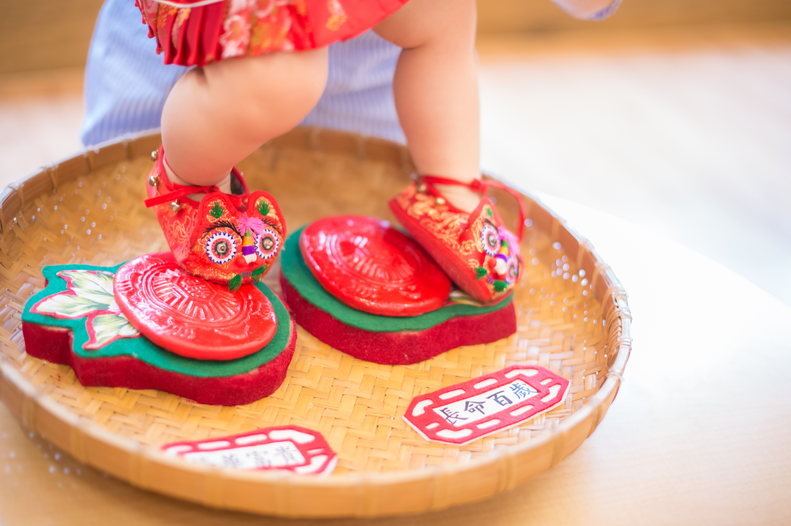
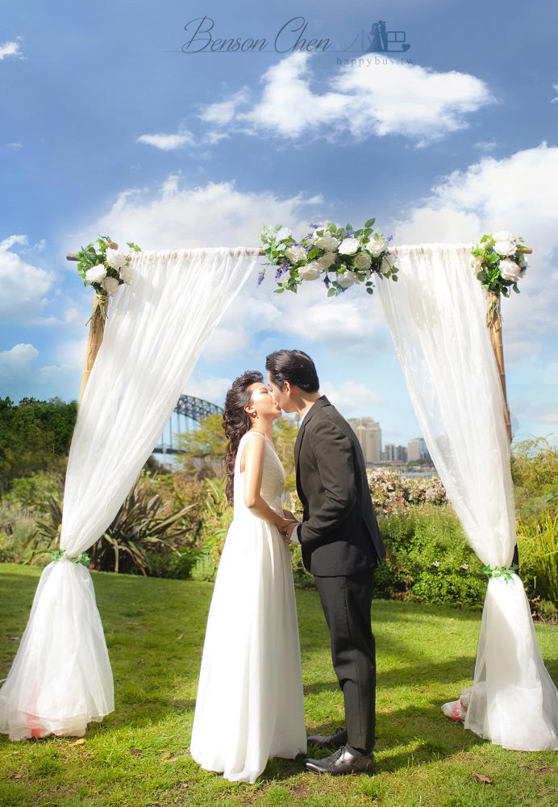

生日派對
在森林包圍的私人場地裡，舉辦屬於你們的生日派對。可自由佈置、拍照、聚餐與慶祝，適合家人好友小型包場聚會。

Joyforest 揪好森｜森林派對場地｜預約制
生日派對｜抓周｜寵物聚會｜寵物攝影｜親子寫真｜桃園中壢
揪好森位於桃園楊梅，是一處結合草地、樹木、戶外廚房與生活感佈景的森林系包場空間，適合希望在自然環境中，預約制包場使用，輕鬆舉辦溫馨、不受打擾的私人聚會。
在森林包圍的私人場地裡，舉辦屬於你們的生日派對。可自由佈置、拍照、聚餐與慶祝，適合家人好友小型包場聚會。
結合自然系空間與親子氛圍，打造溫暖又有儀式感的抓周時光。適合拍照留念，也能安排簡單佈置與家人聚會。

寵物也能自在奔跑與互動的森林系空間，適合毛孩生日、寵物聚會與主人朋友一起拍照留下回憶。

森林中的私密場地，適合安排驚喜求婚、浪漫佈置與紀念攝影，讓重要時刻更有故事感與畫面感。

用自然光、草地與森林背景，拍下輕鬆自然的親子互動畫面。不只是拍照，更像一次溫柔的家庭相聚時光。

| 方案 | 費用 | 說明 |
|---|---|---|
| 影像拍攝（寵物攝影） | NT$3,800 起 | 半小時起，至少 50 張以上，含基本調色；可加購精修 NT$380/張。 |
| 影像拍攝（親子寫真） | NT$4,800 起 | 生活感互動紀錄，自然抓拍風格。 |
| 小型聚會純場地（20人內） | 4 小時 NT$6,800 | 不含攝影服務；可自帶餐點/外送。 |
| 小聚加購拍攝（照片） | NT$4,800 | 適合抓周、親子日、毛孩生日、朋友聚會紀錄。 |
| 小聚加購拍攝（照片＋短片） | NT$8,800 | 照片＋微電影短片（依當日安排與流程調整）。 |